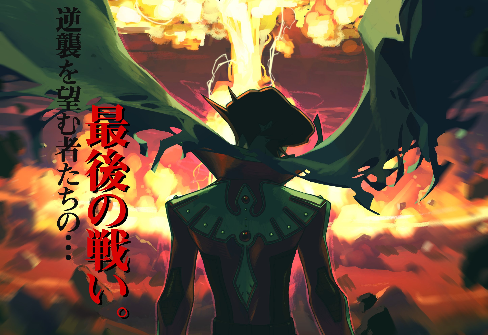

Resistor (Godot Wild Jam #45)
Original soundtrack & sound design
Play as a public enemy on the run, forced to prove your innocence to escape the clutches of "justice". Made with John Gabriel and Jerico Landry for Godot Wild Jam #45, placed 1st in Audio category.
PLAY: ITCH.IO
Jaye and the Hungry Sea (Black & White Jam 2021)
Original soundtrack & sound design
A dark journey through stormy oceans and monsters of the deep. Uncover a story about displacement, guilt, and survival. Made for Black & White Jam 2021, and placed 8th out of more than 200 entries.
PLAY: ITCH.IO
Infinite Red: The Day the Earth Stood Still

Sound design
for the first game by Mode Gone. In-game UI sounds inspired by archaic computer operating systems and 90s console games.
PLAY: MODEGONE.NET
S I G N A L & SHIVER (A Game By Its Cover Jam)


Two imagined soundtracks for entries to the 2022 MY FAMICASE Exhibition, inspired by 'SHIVER' by Dan Ingram and 'S I G N A L' by Zeero. SHIVER takes cues from classic survival horror games, while S I G N A L's inspirations lie in electronic-leaning indie game scores. Created over the course of 1 month for A Game By Its Cover Jam.
LISTEN: S I G N A L・SHIVER